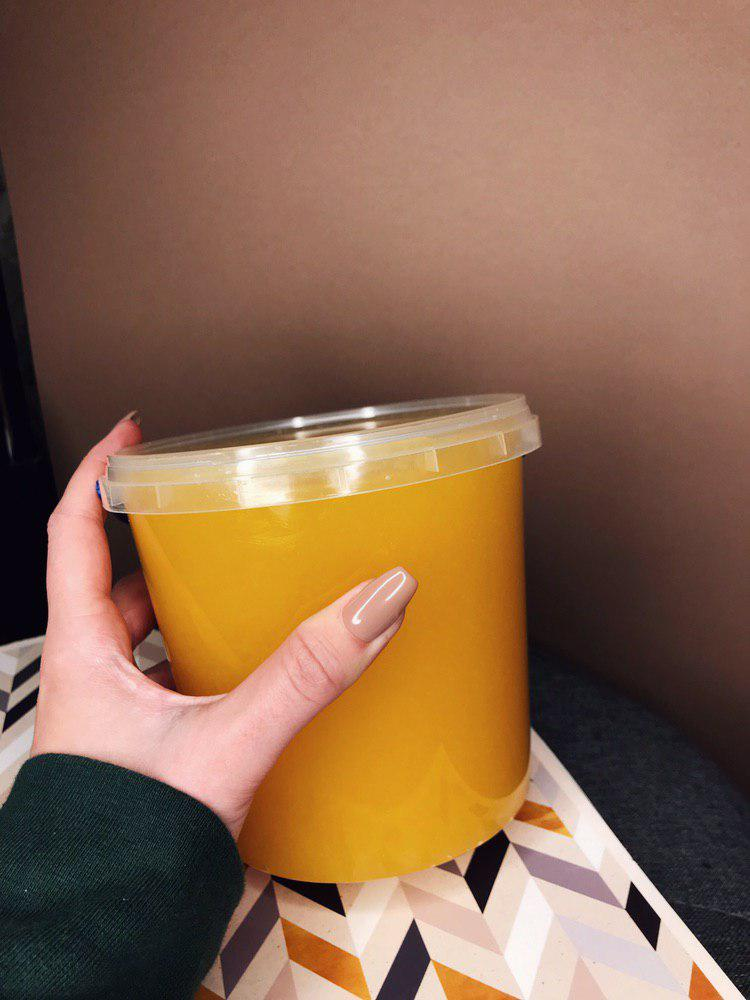

- Мед
- — густа солодка маса, яку бджоли виробляють з нектару квітів. За походженням розрізняють квітковий (нектарний)
і падевий мед.
неіснуючий мед
Ферменти
Такі ферменти, як інвертаза, діастаза, каталаза, ліпаза
та інші, що містяться в меді, при нагріванні до високих температур
(60 o
C і вище) чи фальсифікації втрачають або знижують свою активність. Про вміст ферментів свідчить діастазне число. Діастазне число до 30—50 одиниць Готе свідчить про високу ферментативну активність.

Соняшниковий мед
Для соняшникового меду властивий низький вміст мальтози (0,8…2,9%), середній вміст фруктози (37,6…44,1%), середній або високий вміст глюкози (52,0…56,5%), обов'язкова присутність сахарози (0,3…0,8%). Інші дисахариди утримуються в дуже невеликих кількостях. Відношення альфа-глюкоза/бета-глюкоза більше або дорівнює 0,98, відношення фруктоза/глюкоза не більш 0,86, ступінь насолоди становить 113…116 одиниць.